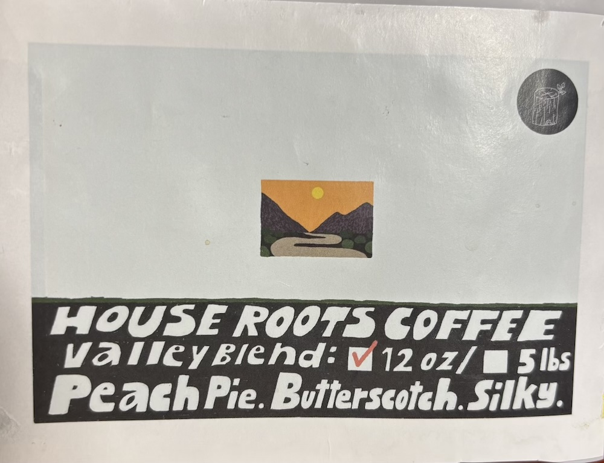

Part 1
These images were taken during Ryden’s travels in Death Valley and Joshua Tree National Park. I think the most interesting thing about these images is the wildlife they capture; Death Valley and Joshua Tree are both famous for their unique vegetation, and Ryden captures them well in these photographs. I think a more obvious use of these photographs would be as a documentary of plant life and habitats in the national parks, but Ryden explained that he will add a layer with this project by exploring their relationships with their geography and location. Something that makes me curious about these images is the rock formation in the first photograph – if it’s natural, I’m curious how it came to be; if it’s man-made, I’m curious if it’s practical or sculptural. There’s a lot that I don’t know about these habitats, which makes me naturally curious.
One idea I had for these photos is a Geoguessr game! Since Ryden wants to emphasize the plant life of the national parks, I think it would be really interesting for users to examine the images, and use the hints provided by the wildlife to deduce whether the photo was taken in Death Valley or at Joshua Tree National Park. The project could provide feedback to the user as well by pointing out what clues in the photograph give away its location, which adds a layer by being educational about the unique wildlife of these sites.
I understand why it’s best practice to have matching keyboards and to hide sensitive information by default, but these tend to be sources of frustration in my personal experience. I tend to always check “show password” if it’s an option, and when it’s not an option it takes me multiple attempts to get my password correct because of typos and being unaware of where the typo occurred. Matching keyboards can be helpful, but often I’m more comfortable navigating the standard keyboard layout I am used to by muscle memory, and it feels like an extra step to have to adjust to the new layout. I suppose these instances demonstrate that there’s always going to be individual differences among user preference.
Part 2
The image above is the first coffee bag label I saved. It was a gift mailed to me over winter break by my best friend, from his favorite hometown coffee shop in Northridge, Los Angeles. Since then, I’ve been clipping and saving the labels of every new bag of coffee beans I try. I have labels from my favorite spots in Sacramento, from travelling in Seattle, Portland, San Francisco, and LA, and a really cool one from the UC Davis Coffee Center that was gifted to me at work and designed by a fellow design student!
I’ve struggled with depression for a lot of my life, and there was a period where I was functioning just about as much as a vegetable for a couple months. My therapist suggested that when everything feels overwhelming, I can take little steps forward, something as simple as making myself a cup of coffee, to get started with my day. Since then, I’ve viewed my morning ritual differently, and on difficult days it’s the first step I take to get myself up and going.
Each of my coffee bean labels lists the origin of the beans, taste notes, and processing methods. I think it would be interesting to manipulate some of these labels to incorporate a storytelling element, like each bag represents a different set of comfort, strength, or warmth to encourage the user throughout their day. I’d love to walk the user through my coffee making routine and communicate the emotional significance of it through this project.